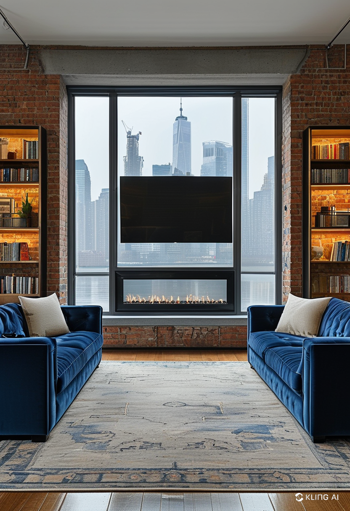
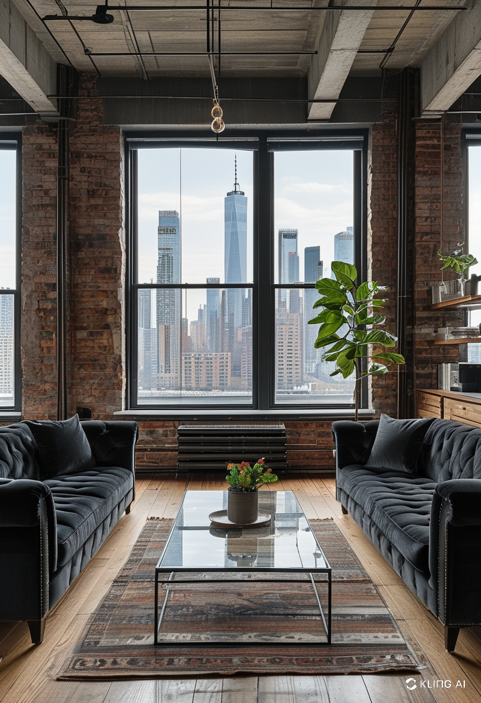
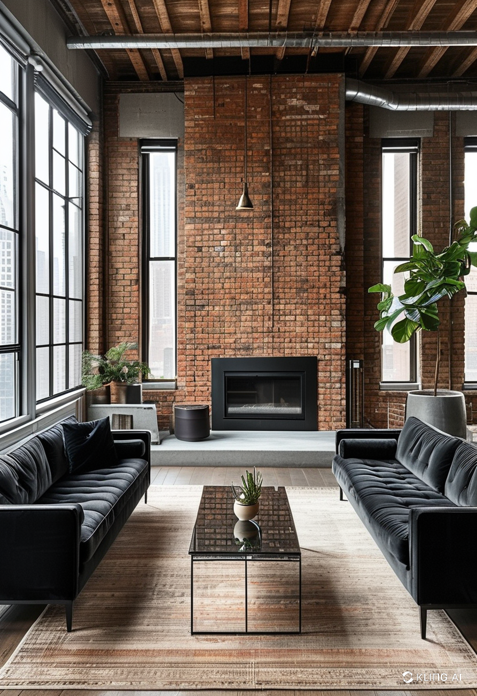
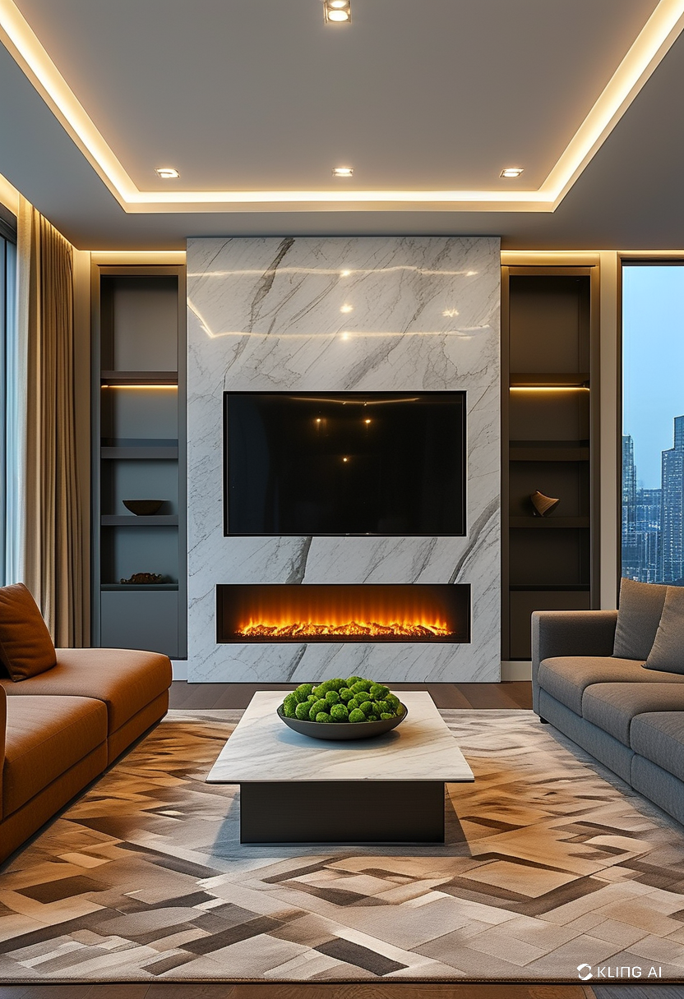

A fireplace often serves as the natural focal point in a living room. It adds warmth—literally and stylistically—and draws people in for conversation and comfort. Whether it's a traditional wood-burning hearth or a sleek electric model, a fireplace sets the tone for the entire space. A well-decorated fireplace can tie together the whole aesthetic of your living room, enhancing both ambiance and value.
Before jumping into decor ideas, it’s important to consider your fireplace style. Do you lean toward rustic charm, modern minimalism, or classic elegance? A brick fireplace may pair well with cozy, vintage decor, while a marble or concrete fireplace may suit a more contemporary setting. Your living room decor choices should harmonize with the fireplace material and design. A mismatched style can create visual conflict and reduce the overall impact of the space.
The mantel is prime real estate for living room decor. Use it to showcase your personality while complementing the fireplace structure. Popular mantel decor options include framed art, antique mirrors, candles, vases, and layered seasonal items. To keep things visually appealing, stick to a mix of heights and textures. Avoid overcrowding; the goal is to enhance, not clutter. Symmetrical arrangements offer a timeless look, while asymmetry can lend a more modern and relaxed vibe.
The wall around your fireplace can either elevate or detract from your decor. Consider adding texture through shiplap, tile, or natural stone to frame your fireplace beautifully. Wall sconces or floating shelves can add vertical interest, while built-in bookcases bring both functionality and charm. Don’t forget the hearth itself; decorative logs, baskets, or a well-chosen rug can create a cozy, grounded effect that pulls everything together.
Your living room color scheme should integrate seamlessly with your fireplace. Neutral tones like beige, gray, and white are versatile and allow your fireplace to shine. If your fireplace has a bold material or color—like red brick or black slate—use accents in the room to echo those tones. Throw pillows, curtains, and art can bring cohesion. For a pop of contrast, metallics like brass or matte black can add modern sophistication without overwhelming the space.
Refreshing your living room decor around the fireplace doesn’t always require a full redesign. Seasonal decor allows you to keep things dynamic and festive. In the winter, think cozy textures like chunky knit blankets and garlands. Spring might invite lighter fabrics and pastel floral arrangements. Fall decor could include pumpkins, lanterns, and dried leaves, while summer favors coastal elements like driftwood and soft blues. Changing small elements seasonally keeps your space feeling fresh and current.
Even if your living room is on the smaller side, a fireplace can still make a big impact. Stick to light colors to open up the space, and choose decor pieces that are proportionate to your room size. Wall-mounted fireplaces are great space-savers and can be framed with slimline shelves or minimalistic mantels. Mirrors above the fireplace can also create an illusion of more space and reflect natural light around the room.
When designing your living room decor around a fireplace, consistency is key. Every element, from the mantel to the surrounding wall to the accents in the room, should work in harmony. Take cues from the fireplace material and shape, and then build your decor choices to complement those features. A well-decorated fireplace transforms a standard living room into a refined, welcoming, and cohesive retreat you’ll love spending time in.
   